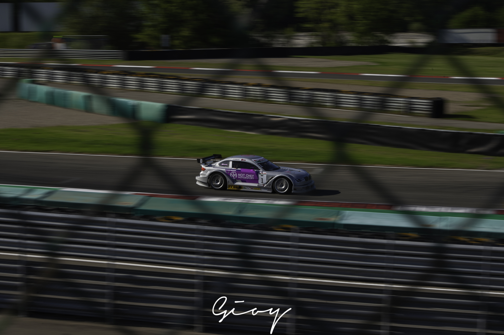
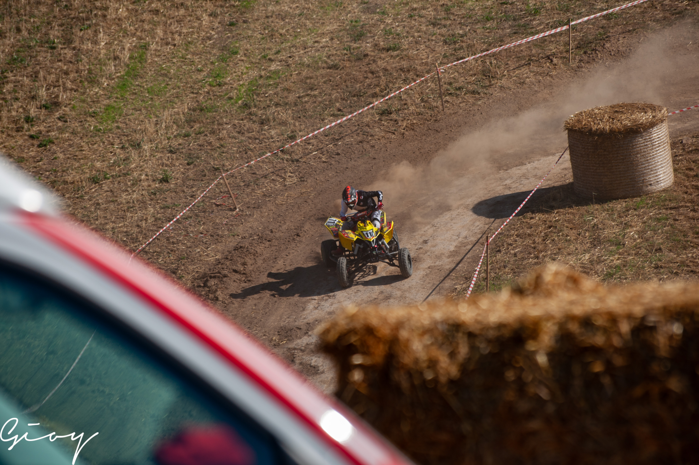
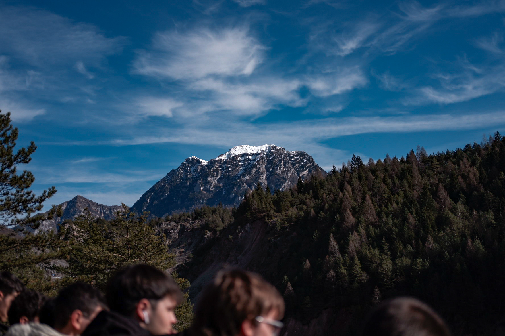

The journey begins with engines, dust, and the adrenaline of motion.
Photography first took shape in the
vibrant world of motorsport — a space where speed and chaos meet precision and focus.
What started as fascination soon became exploration, a way of capturing energy that exists only for a
fraction of a second.
 |
 |
|---|---|
 |
 |
 |

|
The first steps were taken on winding roads and mountain trails, surrounded by the echo of engines and the
smell of burnt rubber.
Rally photography demanded instinct — the ability to anticipate movement and frame emotion in the
middle of dust and noise.
Every shot carried the unpredictability of the race itself, and in that raw spontaneity, a
love for imperfection was born.
 |
 |
|---|---|
 |
 |
 |

|
From the open roads to the controlled geometry of racing circuits, the lens found a different rhythm.
Here,
everything followed a pattern — the precise line of a turn, the symmetry of barriers, the repetition of
laps.
It was a space to study composition, timing, and discipline.
Capturing speed became an art of balance between motion and stillness, chaos and control.
 |
 |
|---|---|
 |

|
 |
 |
Over time, the search for adrenaline gave way to a search for silence.
The camera turned toward landscapes,
where light and stillness replaced noise and speed. Nature became a new teacher — showing patience,
observation, and the beauty of waiting for the right moment.
Each photograph captured not motion, but time itself: a horizon at dusk, a mountain wrapped in fog, the calm
before dawn.
 |
 |
|---|---|
 |
 |
Eventually, the journey found its way into the streets.
What once was the energy of engines became the rhythm of people — gestures, glances, and fleeting
interactions that reveal human stories.
Street photography brought everything together: the instinct learned from rallies, the precision from
circuits, the attention to light from landscapes.
Every corner, every shadow, every passerby became a new chance to tell a story.